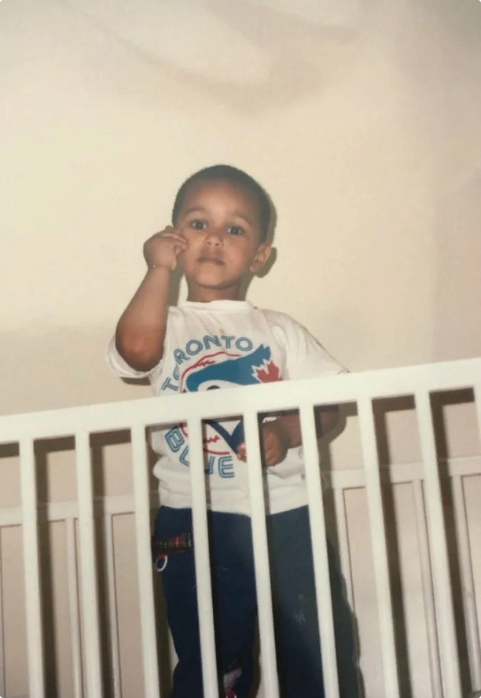
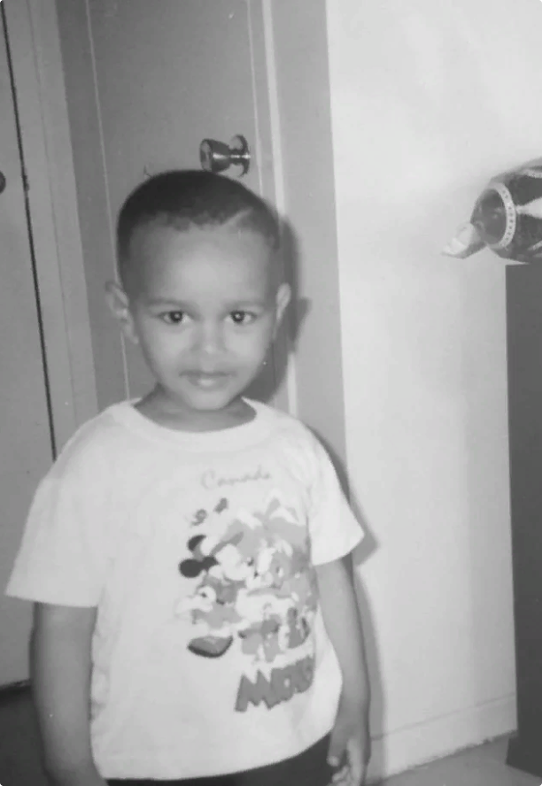
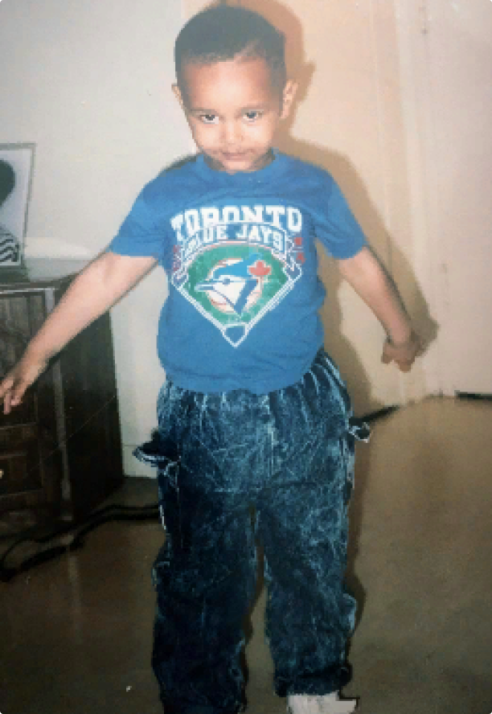
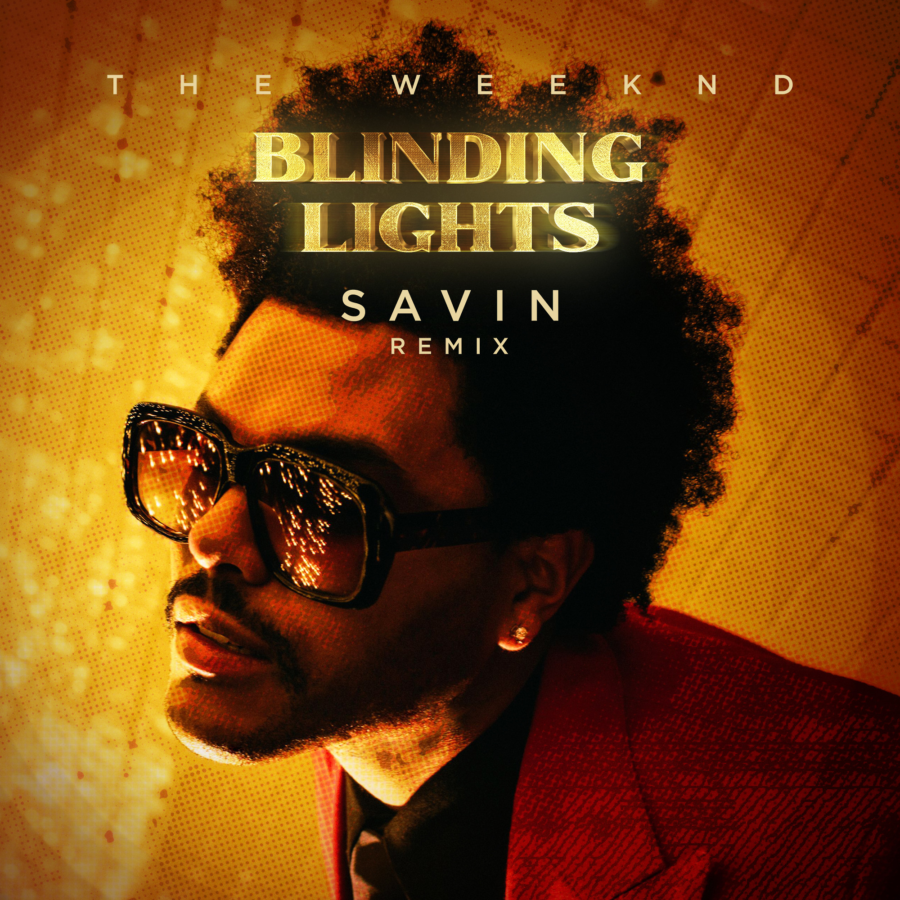
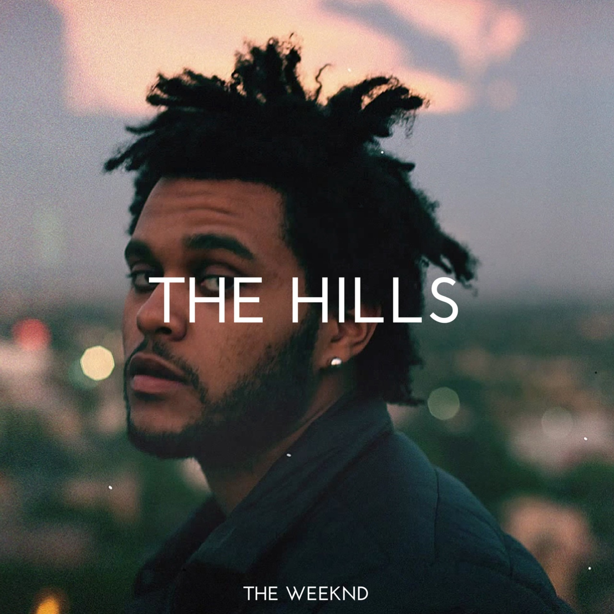

Эйбел родился и вырос в Торонто, провинция Онтарио, и начал свою карьеру в 2009 году, анонимно публикуя музыку на YouTube. Два года спустя он стал соучредителем звукозаписывающего лейбла XO и выпустил микстейпы «House of Balloons», «Thursday» и «Echoes of Silence», которые получили признание за его стиль современного и альтернативного R&B и мистику, окружающую его личность. В 2012 году он подписал контракт с Republic Records и переиздал микстейпы в сборнике «Trilogy». Он исследовал темную волну в своем дебютном студийном альбоме «Kiss Land» (2013), который дебютировал на второй строчке американского Billboard 200. После его выхода Эйбел начал вносить свой вклад в саундтреки к фильмам, а его нашумевший сингл «Earned It» из фильма «Пятьдесят оттенков серого» (2015) получил премию «Грэмми» за лучшее R&B исполнение, а также был номинирован на премию «Оскар» за лучшую оригинальную песню.


.png)

1.В Соединённых Штатах «The Hills» вошли в Billboard Hot 100 на позиции № 20 в чарте, датированном 13 июня 2015 года; это был высочайший дебют недели[6]. На этот дебют преимущественно повлияли цифровые продажи 109 000 копий сингла за первую неделю и 5,2 миллиона прослушиваний онлайн внутри страны, не без помощи одновременного с выходом сингла релиза видеоклипа[7]. На следующей неделе сингл опустился на одну позицию, но зато достиг наибольшего прироста в онлайн-прослушиваниях в чарте[8]. С тех пор сингл достиг пика на позиции № 4, став четвёртым синглом Уикнда, попавшим в топ-10.
2.«Blinding Lights» достигла первого места в чартах более тридцати стран мира, включая США и Канаду, где она стала пятым чарттоппером в Billboard Hot 100 и Canadian Hot 100, возглавив их на четыре и семь недель, соответственно. Она также стала первым синглом певца, достигшим вершины хит-парада Германии и продержалась там 10 недель.Благодаря этой песне The Weeknd стал первым музыкантом в истории, которому удалось одновременно лидировать в пяти основных чартах Billboard в издании 30 марта, когда он был на первом месте в Hot 100, Billboard 200, Artist 100, Hot 100 Songwriters и в Hot 100 Producers.


 The Weeknd и Белла Хадид познакомились в апреле 2015 года на одной из вечеринок. Музыкант предложил ей вместе поработать над его новым альбомом Beauty Behind the Madness. А уже вскоре после этого все заговорили о появлении новой звездной парочки. Папарацци часто замечали их вместе в клубах и ресторанах. И они не скрывались, позируя на камеру. Но спустя полгода они расстались в лучших голливудских традициях. Представили Беллы и The Weeknd сообщили, что у них сложные рабочие графики, и поэтому они не могут быть вместе. Они оба стали увлеченно работать над новыми проектами. The Weeknd записывал новые треки, а Белла работала на Неделях моды. Также они поработали вместе над клипом In The Night, где Белла сыграла роль танцовщицы в ночном клубе. И опять все стали обсуждали, почему музыкант выбрал на эту роль именно свою экс-возлюбленную.И, видимо, эти слухи ходили не зря. В начале 2016 года их снова стали замечать вместе. А на церемонии «Грэмми» дебютировали как пара.
The Weeknd и Белла Хадид познакомились в апреле 2015 года на одной из вечеринок. Музыкант предложил ей вместе поработать над его новым альбомом Beauty Behind the Madness. А уже вскоре после этого все заговорили о появлении новой звездной парочки. Папарацци часто замечали их вместе в клубах и ресторанах. И они не скрывались, позируя на камеру. Но спустя полгода они расстались в лучших голливудских традициях. Представили Беллы и The Weeknd сообщили, что у них сложные рабочие графики, и поэтому они не могут быть вместе. Они оба стали увлеченно работать над новыми проектами. The Weeknd записывал новые треки, а Белла работала на Неделях моды. Также они поработали вместе над клипом In The Night, где Белла сыграла роль танцовщицы в ночном клубе. И опять все стали обсуждали, почему музыкант выбрал на эту роль именно свою экс-возлюбленную.И, видимо, эти слухи ходили не зря. В начале 2016 года их снова стали замечать вместе. А на церемонии «Грэмми» дебютировали как пара.
.png) Их роман начинался, как и большинство голливудских лавстори, со снимков папарацци, регулярно попадающих в сеть. Любимица миллионов Селена Гомес, на репутации которой не сказалось даже скандальное расставание с Джастином Бибером, только что вышла из клиники, где приходила в себя после обострения хронического заболевания (волчанки), и, кажется, расцвела.Роман они скрывали недолго — уже спустя 4 месяца вместе появились на Met Gala и были названы одной из самых красивых пар современности. Рядом с рэпером Гомес повзрослела, похорошела и, кажется, начала вызывать уважение даже у тех, кто раньше относился к ней скептически. Отношения развивались стремительно: несмотря на плотные графики, они находили время друг на друга, стали жить вместе, а в какой-то момент инсайдеры заговорили о скорой помолвке, но... Вдруг The Weeknd отправляется на очередные гастроли, а безупречная во всем Селена наступает на те же грабли — ее замечают в компании Джастина Бибера
Их роман начинался, как и большинство голливудских лавстори, со снимков папарацци, регулярно попадающих в сеть. Любимица миллионов Селена Гомес, на репутации которой не сказалось даже скандальное расставание с Джастином Бибером, только что вышла из клиники, где приходила в себя после обострения хронического заболевания (волчанки), и, кажется, расцвела.Роман они скрывали недолго — уже спустя 4 месяца вместе появились на Met Gala и были названы одной из самых красивых пар современности. Рядом с рэпером Гомес повзрослела, похорошела и, кажется, начала вызывать уважение даже у тех, кто раньше относился к ней скептически. Отношения развивались стремительно: несмотря на плотные графики, они находили время друг на друга, стали жить вместе, а в какой-то момент инсайдеры заговорили о скорой помолвке, но... Вдруг The Weeknd отправляется на очередные гастроли, а безупречная во всем Селена наступает на те же грабли — ее замечают в компании Джастина Бибера